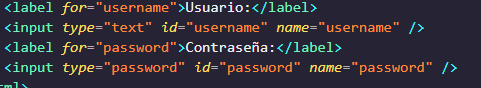

Es un lenguaje de programación que se utiliza principalmente en el desarrollo web para agregar interactividad a las páginas. Es un lenguaje de secuencias de comandos del lado del cliente, lo que significa que se ejecuta en el navegador web del usuario en lugar de en un servidor. JavaScript se utiliza para manipular el contenido de una página web, interactuar con el usuario, enviar y recibir datos del servidor, y mucho más. Es un lenguaje versátil y potente que se ha convertido en uno de los pilares fundamentales de la web moderna.
"Extensible Markup Language" (Lenguaje de Marcado Extensible). Es un lenguaje de marcado similar a HTML que se utiliza para almacenar y transportar datos de forma legible tanto para humanos como para máquinas. XML se utiliza comúnmente para estructurar datos de manera que puedan ser intercambiados entre diferentes sistemas de manera uniforme.
Un atributo es un valor que se especifica dentro de una etiqueta para proporcionar información adicional sobre un elemento. Los atributos pueden influir en cómo se ve o se comporta un elemento en una página web. Por ejemplo, en la etiqueta, el atributo src se utiliza para especificar la URL de la imagen que se debe mostrar,
<!-->
Es un lenguaje específico de dominio, diseñado para administrar, y recuperar información de sistemas de gestión de bases de datos relacionales
Lenguaje de definición de datos, es un lenguaje proporcionado por el sistema de gestión de base de datos que permite a los usuarios de la misma llevar a cabo las tareas de definición de las estructuras que almacenarán los datos así como de los procedimientos o funciones que permitan consultarlos.
Lenguaje de Manipulación de Datos es un lenguaje proporcionado por los sistemas gestores de bases de datos que permite a los usuarios de la misma llevar a cabo las tareas de consulta o modificación de los datos contenidos en las Bases de Datos del Sistema Gestor de Bases de Datos
Código en línea: El código en línea se escribe directamente dentro de las etiquetas <script> en el HTML. Puede ser útil para pequeñas funciones o scripts simples. Sin embargo, puede volverse difícil de mantener en aplicaciones más grandes.
Código embebido: El código embebido se escribe dentro de un bloque <script> en el HTML, pero en lugar de incluir el código directamente, se referencia a una función o variable definida en el propio HTML o en un archivo externo. Esto puede ayudar a mantener el código más organizado.
Archivo externo: El código externo se encuentra en un archivo JavaScript separado, que luego se enlaza con el HTML mediante la etiqueta <script src="ruta/al/archivo.js"></script>. Esto facilita la reutilización del código y lo hace más fácil de mantener y actualizar.
Se utiliza en HTML para incluir código JavaScript en una página web. Esta etiqueta tiene varias finalidades, entre las que se incluyen:
Es útil para comunicarse de manera sencilla con el usuario, pero se debe usar con moderación para no interrumpir la experiencia de usuario.
para proporcionar contenido alternativo que se muestra si el navegador del usuario no es compatible con JavaScript o si JavaScript está deshabilitado en el navegador. La finalidad principal de <noscript> es ofrecer una experiencia adecuada para aquellos usuarios que no pueden acceder al contenido dinámico generado por JavaScript. Por ejemplo, si una página web utiliza JavaScript para mostrar un formulario de contacto interactivo, el contenido dentro de la etiqueta <noscript> podría ser un formulario HTML estático que se muestra en su lugar si JavaScript no está disponible.
Es obtener el tipo de datos de una variable o expresión. typeof es un operador unario que devuelve una cadena de texto que representa el tipo de datos de la variable o expresión evaluada. Esto puede ser útil para realizar diferentes acciones o validaciones dependiendo del tipo de datos con el que se esté trabajando.
Agrega uno o más elementos al final de un arreglo y devuelve la longitud resultante del arreglo. pop() elimina el último elemento de un arreglo y devuelve ese elemento. shift() elimina el primer elemento de un arreglo y devuelve ese elemento.
Es un método en JavaScript que se utiliza para agregar uno o más elementos al principio de un array y devuelve la nueva longitud del array. Por ejemplo:
Pop es un método en JavaScript que se utiliza para eliminar el último elemento de un array y devuelve ese elemento. Por ejemplo:
es un método en JavaScript que se utiliza para eliminar el primer elemento de un array y devuelve ese elemento. Por ejemplo:
Es un elemento en HTML que se utiliza para crear un formulario en una página web. Los formularios permiten a los usuarios ingresar datos que luego pueden ser enviados al servidor para ser procesados. Por ejemplo
Es un elemento en HTML que se utiliza para crear un campo de entrada en un formulario. Los campos de entrada permiten a los usuarios ingresar datos como texto, números, fechas, etc.
